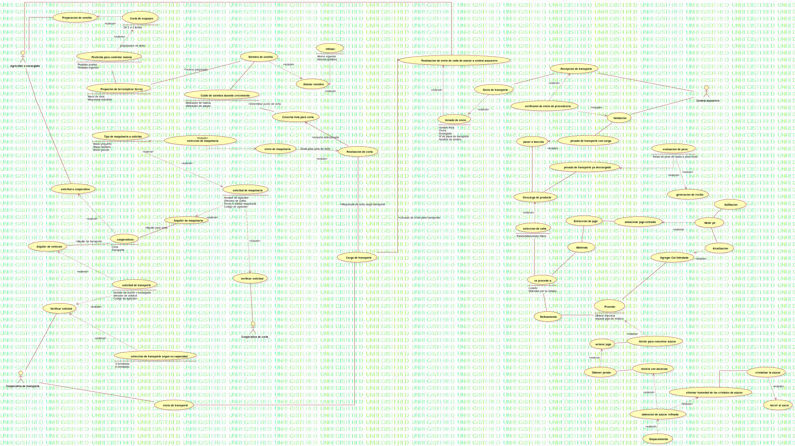

Casos de uso
UMLModel
«»
Proyecto Produccion Azucar
::
Casos de uso
Description
none
Diagrams

Diagrama casos de uso
Properties
Name
Value
name
Casos de uso
stereotype
visibility
public
importedElements
viewpoint
Owned Elements
Diagrama casos de uso
Agricultor o encargado
Cooperativa de corta
Cooperativa de transporte
Central azucarero
Preparacion de semilla
(Agricultor o encargado—Preparacion de semilla)
Prepacion de terreno(Arar tierra)
(Preparacion de semilla—Prepacion de terreno(Arar tierra))
Mano de obra
Maquina industrial
(Prepacion de terreno(Arar tierra)→Mano de obra)
(Prepacion de terreno(Arar tierra)→Maquina industrial)
Pesticida para controlar maleza
(Pesticida para controlar maleza—Prepacion de terreno(Arar tierra))
Siembra de semilla
(Prepacion de terreno(Arar tierra)—Siembra de semilla)
Terreno preparado (Prepacion de terreno(Arar tierra)—Siembra de semilla)
Abonar siembra
(Siembra de semilla→Abonar siembra)
Utilizar:
(Abonar siembra→Utilizar:)
Cuido de siembra durante crecimiento
(Siembra de semilla—Cuido de siembra durante crecimiento)
Cosecha lista para corta
Determinar punto de corta (Cuido de siembra durante crecimiento—Cosecha lista para corta)
Alquiler de maquinaria
(Agricultor o encargado—Alquiler de maquinaria)
solicitud de maquinaria
(Alquiler de maquinaria→solicitud de maquinaria)
verificar solicitud
(solicitud de maquinaria→verificar solicitud)
(verificar solicitud—Cooperativa de corta)
Tipo de maquinaria a solicitar
(Cooperativa de corta—Tipo de maquinaria a solicitar)
(verificar solicitud—Tipo de maquinaria a solicitar)
seleccion de maquinaria
(seleccion de maquinaria—Agricultor o encargado)
(Tipo de maquinaria a solicitar→seleccion de maquinaria)
envio de maquinaria
(seleccion de maquinaria—envio de maquinaria)
Corta de caña (envio de maquinaria—Cosecha lista para corta)
(Cooperativa de corta—envio de maquinaria)
Envio para corta de caña (envio de maquinaria→Realizacion de corta)
(solicitud de maquinaria→Tipo de maquinaria a solicitar)
Envio de maquinaria
(seleccion de maquinaria→envio de maquinaria)
Realizacion de corta
cosecha seleccionada (Realizacion de corta—Cosecha lista para corta)
cooperativas:
solicitud a cooperativa
(Agricultor o encargado—solicitud a cooperativa)
(solicitud a cooperativa→cooperativas:)
(solicitud a cooperativa→cooperativas:)
Alquiler para corta (cooperativas:—Alquiler de maquinaria)
Alquiler de transporte (Alquiler de vehiculo—cooperativas:)
(cooperativas:—Cooperativa de corta)
Alquiler de vehiculo
solicitud de transporte
(Alquiler de vehiculo→solicitud de transporte)
Verificar solictud
(solicitud de transporte→Verificar solictud)
(Cooperativa de transporte—Verificar solictud)
seleccion de transporte segun su capacidad
(seleccion de transporte segun su capacidad→solicitud de transporte)
envio de transporte
(Verificar solictud→seleccion de transporte segun su capacidad)
(Cooperativa de transporte—envio de transporte)
(envio de transporte—Carga de transporte)
Carga de transporte
Maquinaria de corta carga transporte (Realizacion de corta—Carga de transporte)
Realizacion de envio de caña de azucar a central azucarero
(Agricultor o encargado—Realizacion de envio de caña de azucar a central azucarero)
llenado de envio
(Realizacion de envio de caña de azucar a central azucarero→llenado de envio)
(Carga de transporte—Realizacion de envio de caña de azucar a central azucarero)
Envio de transporte
(llenado de envio→Envio de transporte)
Recepcion de transporte
(Central azucarero—Recepcion de transporte)
(Envio de transporte→Recepcion de transporte)
(Envio de transporte—Recepcion de transporte)
verificaion de envio de procedencia
(Recepcion de transporte→verificaion de envio de procedencia)
Validacion
(verificaion de envio de procedencia→Validacion)
(Validacion—Central azucarero)
Descarga de producto
(Validacion→Descarga de producto)
se procede a:
(Descarga de producto—se procede a:)
Molienda
Refinamiento
(se procede a:→Molienda)
almacenar jugo extraido
(Molienda—almacenar jugo extraido)
(Molienda—Refinamiento)
Medir ph
(almacenar jugo extraido→Medir ph)
Procede:
(Procede:—Medir ph)
(Refinamiento—Procede:)
Herbir para concetrar azucar
(Refinamiento—Procede:)
(Procede:→Herbir para concetrar azucar)
aclarar jugo
(Herbir para concetrar azucar—aclarar jugo)
Obtener jarabe
(aclarar jugo→Obtener jarabe)
mezcla con zacaroza
(Obtener jarabe—mezcla con zacaroza)
obtencion de azucar refinada
(mezcla con zacaroza→obtencion de azucar refinada)
(mezcla con zacaroza→obtencion de azucar refinada)
eliminar humedad de los cristales de azucar
(obtencion de azucar refinada→eliminar humedad de los cristales de azucar)
cristalizar la azucar
(cristalizar la azucar—eliminar humedad de los cristales de azucar)
hervir al vacio
(cristalizar la azucar→hervir al vacio)
Corta de esquejes
(Preparacion de semilla→Corta de esquejes)
(UseCase)
(Corta de esquejes→Prepacion de terreno(Arar tierra))
preparacion de tierra (Corta de esquejes→Pesticida para controlar maleza)
pesado de transporte con carga
(pesado de transporte con carga—Validacion)
pasar a bascula
(pesado de transporte con carga→pasar a bascula)
(Descarga de producto→pasar a bascula)
pesado de transporte ya descargado
(Descarga de producto—pesado de transporte ya descargado)
evaluacion de peso
(pesado de transporte ya descargado→evaluacion de peso)
generacion de recibo
(evaluacion de peso→generacion de recibo)
seleccion de caña
(Descarga de producto→seleccion de caña)
(seleccion de caña—se procede a:)
(Molienda—se procede a:)
(Refinamiento—se procede a:)
Sulfitacion
(Medir ph—Sulfitacion)
Alcalizacion
(Medir ph—Alcalizacion)
Agregar Cal hidratada
(Alcalizacion→Agregar Cal hidratada)
(Agregar Cal hidratada—Procede:)
Extraccion de jugo
(Molienda—Extraccion de jugo)
(Extraccion de jugo—almacenar jugo extraido)
Empacamiento
(obtencion de azucar refinada→Empacamiento)
(pasar a bascula—Descarga de producto)